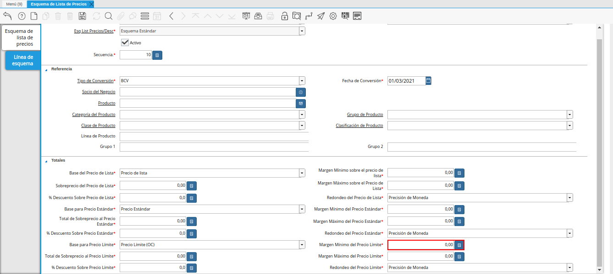

Configuración del Esquema de Lista de Precios
El esquema de lista de precios se puede configurar por tipo de conversión en diferentes monedas, para aplicar a los productos diversos márgenes de ganacias o descuentos, según el requerimiento de la organización para la cual se configura dicho esquema.
A continuación, se explica el procedimiento a seguir para configurar un esquema de lista de precios.
Ubique y seleccione en el menú de ADempiere, la carpeta “Gestión de Materiales”, luego seleccione la carpeta “Reglas de Gestión de Materiales”, por último seleccione la ventana “Esquema de Lista de Precios”.
Imagen 1. Menú de ADempiere

Podrá viualizar la ventana “Esquema de Lista de Precios”, con los registros del esquema de lista de precios definidos para la organización.
Imagen 2. Ventana Esquema de Lista de Precios

Seleccione el icono “Registro Nuevo”, ubicado en la barra de herramientas de ADempiere y proceda al llenado de los campos correspondientes.
Imagen 3. Icono Registro Nuevo
Seleccione en el campo “Organización la organización para la cual se encuentra realizando el registro.
Imagen 4. Campo Organización

Introduzca en el campo “Nombre”, el nombre del esquema de lista de precios que se encuentra realizando.
Imagen 5. Campo Nombre

Introduzca en el campo “Descripción”, una breve descripción del registro que se encuentra realizando.
Imagen 6. Campo Descripción

Seleccione en el campo “Válido Desde”, la fecha de inicio de validez del registro que se encuentra realizando.
Imagen 7. Campo Válido Desde

Seleccione en el campo “Tipo de Descuento”, el tipo de cálculo del descuento comercial.
Imagen 8. Campo Tipo de Descuento

Seleccione el icono “Guardar Cambios”, ubicado en la barra de herramientas de ADempiere.
Imagen 9. Icono Guardar Cambios
Seleccione la pestaña “Línea de Esquema” y proceda al llenado de los campo correspondientes.
Imagen 10. Pestaña Línea de Esquema

Seleccione en el campo “Tipo de Conversión”, el tipo de conversión con el cual se va a trabajar. Para este ejemplo el tipo de conversión utilizado es “BCV”.
Imagen 11. Campo Tipo de Conversión
Note
El tipo de conversión seleccionado en el esquema de lista de precios, debe ser el mismo de la lista de precios.

Seleccione en el campo “Fecha de Conversión”, la fecha de conversión de la moneda.
Esta fecha indica el inicio del periodo de validez del registro que se encuentra realizando.
Imagen 12. Campo Fecha de Conversión

Seleccione en el campo “Socio del Negocio”, el socio del negocio correspondiente al registro que se encuentra realizando.
Al seleccionar un socio del negocio, la configuración que se realice en el presente registro, tendrá efecto solamente sobre dicho socio al momento de seleccionar el mismo en alguna transacción.
Imagen 13. Campo Socio del Negocio

Seleccione en el campo “Producto”, el producto correspondiente al registro que se encuentra realizando.
Al seleccionar un producto, la configuración que se realice en el presente registro, tendrá efecto solamente sobre dicho producto al momento de seleccionar el mismo en alguna transacción.
Imagen 14. Campo Producto

Seleccione en el campo “Categoría del Producto”, la categoría de producto correspondiente al registro que se encuentra realizando.
Al seleccionar una categoría de producto, la configuración que se realice en el presente registro, tendrá efecto solamente sobre dicha categoría al momento de seleccionar la misma en alguna transacción.
Imagen 15. Campo Categoría del Producto
Note
Al configurar el esquema de lista de precios por categoría de producto y procesar la lista de precios llamando dicho esquema, ADempiere no tomará en cuenta aquellos productos que se encuentren en una categoría diferente a la que fue incluida en el esquema.

Seleccione en el campo “Grupo de Producto”, el grupo de producto correspondiente al registro que se encuentra realizando.
Al seleccionar un grupo de producto, la configuración que se realice en el presente registro, tendrá efecto solamente sobre dicho grupo al momento de seleccionar el mismo en alguna transacción.
Imagen 16. Campo Grupo de Producto
Note
Al configurar el esquema de lista de precios por grupo de producto y procesar la lista de precios llamando dicho esquema, ADempiere no tomará en cuenta aquellos productos que se encuentren en un grupo diferente al que fue incluido en el esquema.

Seleccione en el campo “Clase de Producto”, la clase de producto correspondiente al registro que se encuentra realizando.
Al seleccionar una clase de producto, la configuración que se realice en el presente registro, tendrá efecto solamente sobre dicha clase al momento de seleccionar la misma en alguna transacción.
Imagen 17. Campo Clase de Producto
Note
Al configurar el esquema de lista de precios por clase de producto y procesar la lista de precios llamando dicho esquema, ADempiere no tomará en cuenta aquellos productos que se encuentren en una clase diferente a la que fue incluida en el esquema.

Seleccione en el campo “Clasificación de Producto”, la clasificación de producto correspondiente al registro que se encuentra realizando.
Al seleccionar una clasificación de producto, la configuración que se realice en el presente registro, tendrá efecto solamente sobre dicha clasificación al momento de seleccionar la misma en alguna transacción.
Imagen 18. Campo Clasificación de Producto
Note
Al configurar el esquema de lista de precios por clasificación de producto y procesar la lista de precios llamando dicho esquema, ADempiere no tomará en cuenta aquellos productos que se encuentren en una clasificación diferente a la que fue incluida en el esquema.

Introduzca en el campo “Línea de Producto”, la línea del producto correspondiente al registro que se encuentra realizando.
Imagen 19. Campo Línea de Producto

Introduzca en el campo “Grupo 1”, el grupo 1 correspondiente al registro que se encuentra realizando.
Imagen 20. Campo Grupo 1

Introduzca en el campo “Grupo 2”, el grupo 2 correspondiente al registro que se encuentra realizando.
Imagen 21. Campo Grupo 2

El campo “Base del Precio de Lista, indica el precio a usar como la base para el cálculo de una nueva lista de precios.
El presente campo contiene predeterminada la opción “Precio de Lista”.
Imagen 22. Campo Base del Precio de Lista

Introduzca en el campo “Margen Mínimo sobre el precio de lista”, el margen mínimo sobre el precio de lista.
El margen mínimo sobre el precio de lista indica el margen mínimo para un producto. El margen es calculado substrayendo el precio de lista original del nuevo precio calculado. Si el campo contiene “0.00”, el margen es ignorado.
Imagen 23. Campo Margen Mínimo sobre el precio de lista

Introduzca en el campo “Sobreprecio del Precio de Lista”, el sobreprecio del precio de lista.
El total de sobrecargo en el precio de lista indica el total a ser adicionado al precio antes de la multiplicación.
Imagen 24. Campo Sobreprecio del Precio de Lista

Introduzca en el campo “Margen Máximo sobre el Precio de Lista”, el margen máximo sobre el precio de lista.
El margen máximo del precio de lista indica el margen máximo para un producto. El margen es calculado restando el precio de lista original del precio nuevo calculado. Si este campo contiene “0.00”, entonces es ignorado.
Imagen 25. Campo Margen Máximo sobre el Precio de Lista

Introduzca en el campo “% Descuento Sobre Precio de Lista”, el porcentaje (%) de descuento sobre precio de lista.
El porcentaje de descuento sobre precio de lista, indica el porcentaje de descuento que será restado del precio base. Un monto negativo indica el porcentaje que será añadido al precio base.
Imagen 26. Campo % Descuento Sobre Precio de Lista

El campo “Redondeo del Precio de Lista”, indica como el precio de lista final será redondeado.
La opción seleccionada establece la regla de redondeo para la lista de precios final.
Imagen 27. Campo Redondeo del Precio de Lista

El campo “Base para Precio Estándar”, indica el precio a usar como la base para el cálculo del nuevo precio estándar.
El presente campo tiene predeterminada la opción “Precio Estándar”.
Imagen 28. Campo Base para Precio Estándar

Introduzca en el campo “Margen Mínimo del Precio Estándar”, el margen mínimo del precio estándar.
El margen mínimo del precio estándar indica el margen mínimo para un producto. El margen se calcula restando el precio estándar original del precio nuevamente calculado. Si este campo contiene “0.00” entonces es ignorado.
Imagen 29. Campo Margen Mínimo del Precio Estándar

Introduzca en el campo “Total de Sobreprecio al Precio Estándar”, el total de sobreprecio al precio estándar.
El total de sobreprecio del precio estándar, indica el total a ser añadido al precio antes de la multiplicación.
Imagen 30. Campo Total de Sobreprecio al Precio Estándar

Introduzca en el campo “Margen Máximo del Precio Estándar”, el margen máximo del precio estándar.
El margen máximo del precio estándar indica el margen máximo para un producto. El margen se calcula restando el precio estándar original del precio nuevamente calculado. Si este campo contiene “0.00” entonces es ignorado.
Imagen 31. Campo Margen Máximo del Precio Estándar

Introduzca en el campo “% Descuento Sobre Precio Estándar”, el porcentaje (%) de descuento sobre precio estándar.
El porcentaje de descuento en el precio estándar, indica el porcentaje de descuento que será restado del precio base. Un monto negativo indica el porcentaje que será añadido al precio base.
Imagen 32. Campo % Descuento Sobre Precio Estándar

El campo “Redondeo del Precio Estándar”, indica como el precio estándar será redondeado.
La opción seleccionada establece la regla de redondeo para el precio calculado.
Imagen 33. Campo Redondeo del Precio Estándar

El campo “Base para Precio Límite”, identifica el precio a ser usado como la base para calcular una nueva lista de precios.
El presente campo tiene predeterminada la opción “Precio Límite (OC)”
Imagen 34. Campo Base para Precio Límite

Introduzca en el campo “Margen Mínimo del Precio Límite”, el margen mínimo del precio límite.
El margen mínimo del precio límite, indica el margen mínimo para un producto. El margen se calcula restando el precio límite original del nuevo precio calculado. Si este campo contiene “0.00”, entonces es ignorado.

Imagen 35. Campo Margen Mínimo del Precio Límite
Introduzca en el campo “Total de Sobreprecio al Precio Límite”, el total de sobreprecio al precio límite.
El total de sobreprecio al precio límite, indica el total a ser adicionado al precio límite anterior a la multiplicación.
Imagen 36. Campo Total de Sobreprecio al Precio Límite

Introduzca en el campo “Margen Máximo del Precio Límite”, el margen máximo del precio límite.
Identifica el margen máximo para un producto. El margen se calcula restando el precio límite original del nuevo precio calculado. Si este campo contiene “0.00”, entonces es ignorado
Imagen 37. Campo Margen Máximo del Precio Límite

Introduzca en el campo “% Descuento Sobre Precio Límite”, el porcentaje (%) de descuento sobre precio límite.
El porcentaje de descuento sobre el precio límite, indica el porcentaje de descuento que será restado del precio base. Un monto negativo indica el porcentaje que será añadido al precio base.
Imagen 38. Campo % Descuento Sobre Precio Límite

El campo “Redondeo del Precio Límite”, indica el redondeo (si existe alguno) que se aplicará al precio final en la lista de precios.
La opción seleccionada establece la regla de redondeo para el resultado final.
Imagen 39. Campo Redondeo del Precio Límite

Seleccione el icono “Guardar Cambios”, ubicado en la barra de herramientas de ADempiere.
Imagen 40. Icono Guardar Cambios